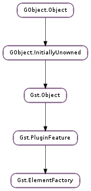

| static | find(name) |
| static | list_filter(list, caps, direction, subsetonly) |
| static | list_get_elements(type, minrank) |
| static | make(factoryname, name) |
| can_sink_all_caps(caps) | |
| can_sink_any_caps(caps) | |
| can_src_all_caps(caps) | |
| can_src_any_caps(caps) | |
| create(name) | |
| get_element_type() | |
| get_metadata(key) | |
| get_metadata_keys() | |
| get_num_pad_templates() | |
| get_static_pad_templates() | |
| get_uri_protocols() | |
| get_uri_type() | |
| has_interface(interfacename) | |
| list_is_type(type) |
None
None
Bases: Gst.PluginFeature
Gst.ElementFactory is used to create instances of elements. A GstElementfactory can be added to a Gst.Plugin as it is also a Gst.PluginFeature.
Use the Gst.ElementFactory.find () and Gst.ElementFactory.create () functions to create element instances or use Gst.ElementFactory.make () as a convenient shortcut.
The following code example shows you how to create a GstFileSrc element.
Using an element factory
#include <gst/gst.h>
GstElement *src;
GstElementFactory *srcfactory;
gst_init (&argc, &argv);
srcfactory = gst_element_factory_find ("filesrc");
g_return_if_fail (srcfactory != NULL);
src = gst_element_factory_create (srcfactory, "src");
g_return_if_fail (src != NULL);
...
Last reviewed on 2005-11-23 (0.9.5)
| Parameters: | name (str) – name of factory to find |
|---|---|
| Returns: | Gst.ElementFactory if found, None otherwise |
| Return type: | Gst.ElementFactory |
Search for an element factory of the given name. Refs the returned element factory; caller is responsible for unreffing.
| Parameters: |
|
|---|---|
| Returns: | a GLib.List of Gst.ElementFactory elements that match the given requisits. Use Gst.PluginFeature.list_free after usage. |
| Return type: |
Filter out all the elementfactories in list that can handle caps in the given direction.
If subsetonly is True, then only the elements whose pads templates are a complete superset of caps will be returned. Else any element whose pad templates caps can intersect with caps will be returned.
| Parameters: | |
|---|---|
| Returns: | a GLib.List of Gst.ElementFactory elements. Use Gst.PluginFeature.list_free () after usage. |
| Return type: |
Get a list of factories that match the given type. Only elements with a rank greater or equal to minrank will be returned. The list of factories is returned by decreasing rank.
| Parameters: | |
|---|---|
| Returns: | new Gst.Element or None if unable to create element |
| Return type: |
Create a new element of the type defined by the given element factory. If name is None, then the element will receive a guaranteed unique name, consisting of the element factory name and a number. If name is given, it will be given the name supplied.
| Parameters: | caps (Gst.Caps) – the caps to check |
|---|---|
| Returns: | True if the caps are fully compatible. |
| Return type: | bool |
Checks if the factory can sink all possible capabilities.
| Parameters: | caps (Gst.Caps) – the caps to check |
|---|---|
| Returns: | True if the caps have a common subset. |
| Return type: | bool |
Checks if the factory can sink any possible capability.
| Parameters: | caps (Gst.Caps) – the caps to check |
|---|---|
| Returns: | True if the caps are fully compatible. |
| Return type: | bool |
Checks if the factory can src all possible capabilities.
| Parameters: | caps (Gst.Caps) – the caps to check |
|---|---|
| Returns: | True if the caps have a common subset. |
| Return type: | bool |
Checks if the factory can src any possible capability.
| Parameters: | name (str or None) – name of new element, or None to automatically create a unique name |
|---|---|
| Returns: | new Gst.Element or None if the element couldn’t be created |
| Return type: | Gst.Element |
Create a new element of the type defined by the given elementfactory. It will be given the name supplied, since all elements require a name as their first argument.
| Returns: | the GObject.Type for elements managed by this factory or 0 if the factory is not loaded. |
|---|---|
| Return type: | GObject.GType |
Get the GObject.Type for elements managed by this factory. The type can only be retrieved if the element factory is loaded, which can be assured with Gst.PluginFeature.load ().
| Parameters: | key (str) – a key |
|---|---|
| Returns: | the metadata with key on factory or None when there was no metadata with the given key. |
| Return type: | str |
Get the metadata on factory with key.
| Returns: | a None-terminated array of key strings, or None when there is no metadata. Free with GLib.strfreev () when no longer needed. |
|---|---|
| Return type: | [str] |
Get the available keys for the metadata on factory.
| Returns: | the number of pad_templates |
|---|---|
| Return type: | int |
Gets the number of pad_templates in this factory.
| Returns: | the static pad templates |
|---|---|
| Return type: | [Gst.StaticPadTemplate] |
Gets the GLib.List of Gst.StaticPadTemplate for this factory.
| Returns: | the supported protocols or None |
|---|---|
| Return type: | [str] |
Gets a None-terminated array of protocols this element supports or None if no protocols are supported. You may not change the contents of the returned array, as it is still owned by the element factory. Use GLib.strdupv () to make a copy of the protocol string array if you need to.
| Returns: | type of URIs this element supports |
|---|---|
| Return type: | Gst.URIType |
Gets the type of URIs the element supports or Gst.URIType.UNKNOWN if none.